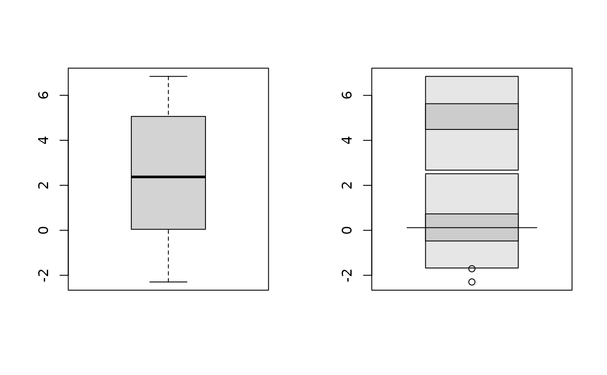
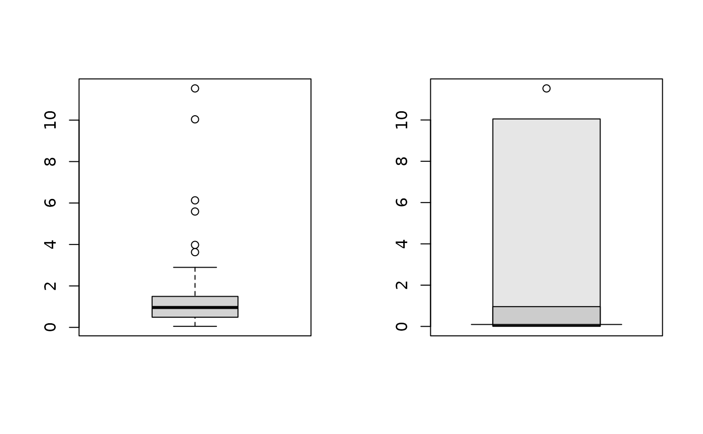

Calculates and plots a univariate highest density regions boxplot.
hdr.boxplot( x, prob = c(99, 50), h = hdrbw(BoxCox(x, lambda), mean(prob)), lambda = 1, boxlabels = "", col = gray((9:1)/10), main = "", xlab = "", ylab = "", pch = 1, border = 1, outline = TRUE, space = 0.25, ... )
| x | Numeric vector containing data or a list containing several vectors. |
|---|---|
| prob | Probability coverage required for HDRs
|
| h | Optional bandwidth for calculation of density. |
| lambda | Box-Cox transformation parameter where |
| boxlabels | Label for each box plotted. |
| col | Colours for regions of each box. |
| main | Overall title for the plot. |
| xlab | Label for x-axis. |
| ylab | Label for y-axis. |
| pch | Plotting character. |
| border | Width of border of box. |
| outline | If not <code>TRUE</code>, the outliers are not drawn. |
| space | The space between each box, between 0 and 0.5. |
| ... | Other arguments passed to plot. |
nothing.
The density is estimated using kernel density estimation. A Box-Cox
transformation is used if lambda!=1, as described in Wand, Marron and
Ruppert (1991). This allows the density estimate to be non-zero only on the
positive real line. The default kernel bandwidth h is selected using
the algorithm of Samworth and Wand (2010).
Hyndman's (1996) density quantile algorithm is used for calculation.
Hyndman, R.J. (1996) Computing and graphing highest density regions. American Statistician, 50, 120-126.
Samworth, R.J. and Wand, M.P. (2010). Asymptotics and optimal bandwidth selection for highest density region estimation. The Annals of Statistics, 38, 1767-1792.
Wand, M.P., Marron, J S., Ruppert, D. (1991) Transformations in density estimation. Journal of the American Statistical Association, 86, 343-353.
Rob J Hyndman
# Old faithful eruption duration times hdr.boxplot(faithful$eruptions)# Simple bimodal example x <- c(rnorm(100,0,1), rnorm(100,5,1)) par(mfrow=c(1,2)) boxplot(x) hdr.boxplot(x)# Highly skewed example x <- exp(rnorm(100,0,1)) par(mfrow=c(1,2)) boxplot(x) hdr.boxplot(x,lambda=0)